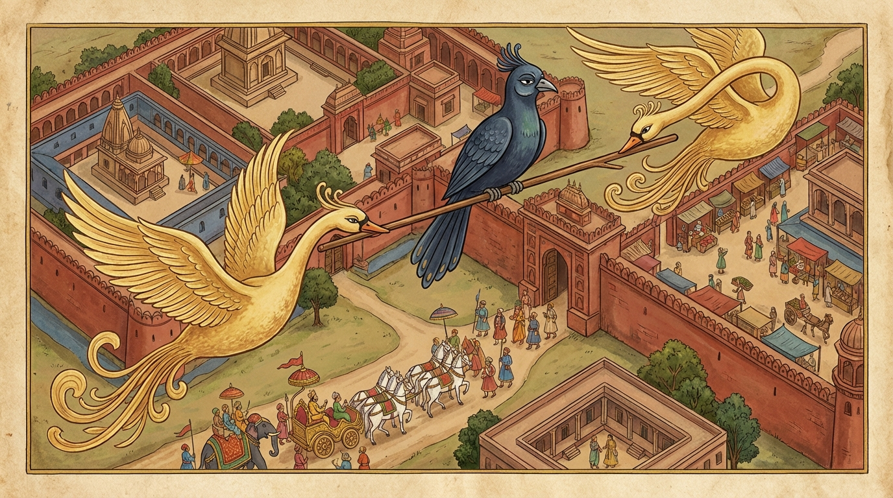

10. විනීලක ජාතකය (160)
“එවමෙව නූන රාජානං” (ඒකාන්තයෙන්ම මේ රජතුමා) යන මේ දේශනාව බුදුරජාණන් වහන්සේ වේළුවනාරාමයෙහි වැඩවාසය කරන සමයෙහි දේවදත්ත තෙරුන් සුගතයන් වහන්සේගේ ලීලාව (බුද්ධ ලීලාව) අනුකරණය කිරීම අරභයා දේශනා කළ සේක. දේවදත්ත තෙරණුවෝ ගයා ශීර්ෂයට වැඩම කළ අගසව් දෙනමට බුද්ධ විලාශය දක්වා සැතපුණු කල්හි, අගසව් දෙදෙනා වහන්සේ ධර්ම දේශනා කොට තමන් වහන්සේලා ඇසුරු කොට සිටි පිරිස රැගෙන වේළුවනාරාමයට වැඩම කළහ. එවිට බුදුරජාණන් වහන්සේ විසින් අගසව් දෙනම අමතා, “සාරිපුත්තයෙනි, දේවදත්ත තෙරුන් ඔබලා දැක කුමක් කළේද?” යි විමසූ සේක. “ස්වාමීනි, බුද්ධ ලීලාව දක්වා මහත් විනාශයකට පත්විය” යැයි ඔවුහු දැන්වූහ. එවිට බුදුරජාණන් වහන්සේ, “සාරිපුත්ත, දේවදත්ත තෙම මා අනුකරණය කරන්නට ගොස් විනාශයට පත් වූයේ දැන් පමණක් නොවේ, පෙරත් විනාශයට පත්වූයේ යැයි” වදාරා තෙරුන් වහන්සේලාගේ ඉල්ලීම පරිදි අතීත කථාව ගෙනහැර දැක්වූ සේක.
අතීතයෙහි විදේහ රට මිථිලා නුවර විදේහ රජු රාජ්ය කරන කල්හි බෝධිසත්ත්වයන් වහන්සේ ඔහුගේ අගමෙහෙසියගේ කුස පිළිසිඳ ගෙන ඉපිද, වැඩිවියට පැමිණි පසු තක්සලා නුවරින් සියලු ශිල්ප ඉගෙන ගෙන පියාගේ ඇවෑමෙන් රාජ්යයෙහි පිහිටියහ. එකල්හි එක් රන්වන් හංස රාජයෙක් ගොදුරු බිමේදී කපුටියක (කැවිඩියක) සමග සංවාසයෙහි යෙදුණේය. ඇය පුතෙකු බිහිකළාය. ඔහු මවගේ හෝ පියාගේ ස්වරූපය නොගත්තේය. එකල්හි ඔහු ඉතා නිල් පැහැති (අඳුරු) වර්ණයෙන් යුක්ත වූ බැවින් ‘විනීලක’ යයි නම් තැබූහ. හංස රාජයා නිතර ගොස් පුත්රයා බලයි. පසුව ඒ හංසයාට දාව අන්ය හංස පෝතකයෝ දෙදෙනෙක් උපන්හ. ඔවුහු තම පියා නිතර මිනිස් වාසයට යනු දැක, “පියාණෙනි, ඔබ කුමක් නිසා නිතර මිනිස් වාසයට යන්නෙහිදැයි?” ඇසූහ. “දරුවනි, එක් කපුටියක හා සංවාසයෙහි යෙදීමෙන් මට එක් පුත්රයෙක් උපන්නේය. ඔහුගේ නම විනීලකයි. මම ඔහු දැකීමට යමියි” පිළිතුරු දුන්නේය. “ඔවුහු කොතැන්හි වසත්දැ?” යි ඇසූ විට, “විදේහ රටේ මිථිලාවට නුදුරෙහි අසවල් නම් තැන එක්තරා තල් ගසක් මුදුනේ වසතියි” කීවේය. “පියාණෙනි, මිනිස් වාසය නම් සැක සහිතය, බිය සහිතය. ඔබතුමා එහි නොයන්න. අපි ගොස් ඔහුව රැගෙන එන්නෙමු” යි කියා හංස පෝතකයෝ දෙදෙනා පියා විසින් කියන ලද සලකුණු අනුව එහි ගොස්, ඒ විනීලකව එක් කුඩා ලීයක හිඳුවා හොටෙන් දඬු කෙළවර අල්ලාගෙන මිථිලා නගරය උඩින් පියාසර කළහ. ඒ මොහොතේ විදේහ රජතුමා සම්පූර්ණ සුදු අසුන් සතර දෙනෙකු යෙදූ උතුම් රථයක හිඳ නගරය පැදකුණු කරයි. විනීලක ඒ දැක මෙසේ සිතුවේය: “මගේත් විදේහ රජුගේත් අතර කවර වෙනසක්ද? එතුමා අසුන් සතර දෙනෙකු යෙදූ රථයක හිඳ නගරයෙහි ඔබමොබ හැසිරෙයි. මම වනාහි හංසයන් යෙදූ රථයක (ලීයක) හිඳ ගමන් කරමි” යි සිතා හෙතෙම අහසින් යමින් පළමු ගාථාව පැවසීය.

“එවමෙව නූන රාජානං - වෙදෙහං මිථිලග්ගහං;
අස්සා වහන්ති ආජඤ්ඤා - යථා හංසා විනීලක”න්ති.
යනුවෙන් පළමු ගාථාව කීවේය.
“කාරණා කාරණ දන්නා වූ මේ අජානේය අශ්වයෝ විදේහ රටට අධිපති මිථිලා නුවර රජු උසුලති. එසේම හංසයෝ විනීලක නම් වූ මා උසුලති.”
එහි එවමෙව යනු මෙසේම යන්නයි. නූන යනු සිතා බැලීමේ (පරිවිතර්ක) අර්ථයේ නිපාතයකි. ඒකාන්ත යන අර්ථයෙහිද යෙදීම සුදුසු වේ. වෙදෙහං යනු විදේහ රටට අධිපති රජුටයි. මිථිලග්ගහං යනු මිථිලාවේ ගෙයක් ගෙන වසන යන අර්ථයි. ආජඤ්ඤා යනු කරුණු කාරණා දන්නා වූ (උතුම් අශ්වයෝ) ය. යථා හංසා විනීලකං යනු යම්සේ මේ හංසයෝ විනීලක (නම් වූ මා) උසුලත්ද, එසේම (මේ අශ්වයෝ රජතුමා උසුලති).
හංස පෝතකයෝ ඔහුගේ වචන අසා කිපී, “මොහු මෙහිම බිම හෙළා යන්නෙමු” යි සිත් උපදවා ගත් නමුත්, “එසේ කළොත් පියාණන් අපට කුමක් කියයිද?” යන ගැරහීමට ඇති බිය නිසා පියා ළඟට පමුණුවා ඔහු කළ කී දෙය පියාට පැවසූහ. ඉක්බිති පියා ඔහුට කිපී, “නුඹ මාගේ පුත්රයන්ට වඩා උසස්ද? යමෙක් මාගේ පුත්රයන් යටපත් කරගෙන රථයෙහි යෙදූ අසුන් මෙන් (ඔවුන්ට) සැලකුවෙහිද, නුඹ තමන්ගේ තරම නොදන්නෙහිය. මේ ස්ථානය ඔබට නුසුදුසුය. තමන්ගේ මව වසන තැනටම යව” යි තර්ජනය කොට දෙවන ගාථාව වදාළේය.
“විනීල දුග්ගං භජසි - අභූමිං තාත සෙවසි;
ගාමන්තකානි සෙවස්සු - එතං මාතාලයං තවා”ති.
යනුවෙන් දෙවන ගාථාව කීවේය.
“විනීලක! නුඹ (අප විසීම නිසා) දුර්ගයක් හෙවත් හිමවත ඇසුරු කරහි. දරුව! නුඹ නුසුදුසු බිමක් සේවනය කරහි. (එබැවින්) ගම් කෙළවර සේවනය කරව. මේ (අසූචි දමන ස්ථානය) නුඹට සුදුසු මව් නිවසයි.”
එහි විනීල යනු ඔහුට නමින් අමතයි. දුග්ගං භජසි යනු මොවුන්ගේ වාසස්ථාන වශයෙන් ගිරිදුර්ග ඇසුරු කරහි. අභූමිං තාත සෙවසි යනු, දරුව! විෂම වූ පර්වත නුඹේ භූමිය නොවේ; (නුඹ) එය ඇසුරු කරහි, එයට එළඹෙයි. එතං මාතාලයං තව යනු මේ ගම් කෙළවර වූ අසූචි දමන තැන්ද, අමු සොහොන් ද නුඹේ මවගේ නිවසයි හෙවත් වාසස්ථානයයි; එහි යව. මෙසේ ඔහුට තර්ජනය කොට, “යව්, මොහු මිථිලා නුවර අසූචි දමන ස්ථානයටම බස්සා එව” යි පුතුන්ට අණ කළේය. ඔවුහු එසේ කළාහුය.
බුදුරජාණන් වහන්සේ මේ ධර්ම දේශනාව ගෙනහැර දක්වා ජාතකය පූර්වාපර සන්ධි ගළපා වදාළ සේක. “එකල විනීලක වූයේ දේවදත්තය. හංස පෝතකයන් දෙදෙනා අගසව් දෙදෙනාය. පියා වූයේ ආනන්දය. වේදේහ රජතුමා නම් ලොව්තුරා බුදුවූ මම ම වූයෙමි.”
දසවන විනීල ජාතක වර්ණනාවයි.
පළමුවන දළ්හ වර්ගය නිමියේය.
එහි වර්ග සාරාංශ ගාථාව මෙසේය:
“රාජොවාද, සිඞ්ගාල, සූකර, උරග, භග්ග, අලීනචිත්ත, ගුණ, සුහනු, මොර සහ විනීල” (යන ජාතක දසයකි).